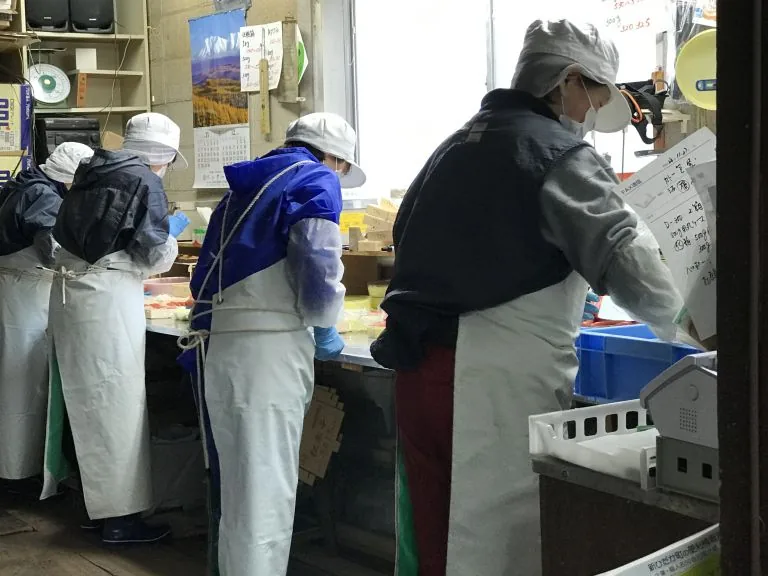

ABOUT THE SHOP
このお店のこと。
三石港町のマルフク池田水産。現サイトでは、道内産の原卵を選び、手作業を重ねてたらこを加工する姿勢が紹介されています。出荷は数量限定との案内があるため、購入や取り寄せを考えている場合は、まずお店に確認してから訪れると安心です。
出会える味、もの、サービス。
道内産の原卵を使ったたらこ
原料と手作業へのこだわりを紹介しています。
数量限定の出荷
現サイトの案内です。現在の注文方法・出荷日・在庫はお問い合わせください。
PHOTO JOURNAL
写真でのぞく、お店の魅力。

写真は現サイトの店舗紹介から保存したものです。撮影当時の内容で、現在の外観・商品・提供状況とは異なる場合があります。写真を押すと大きく表示します。